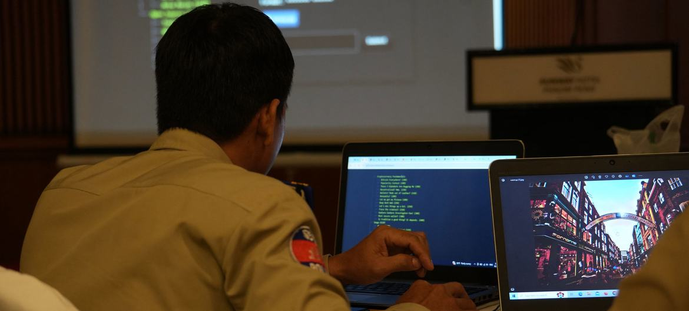
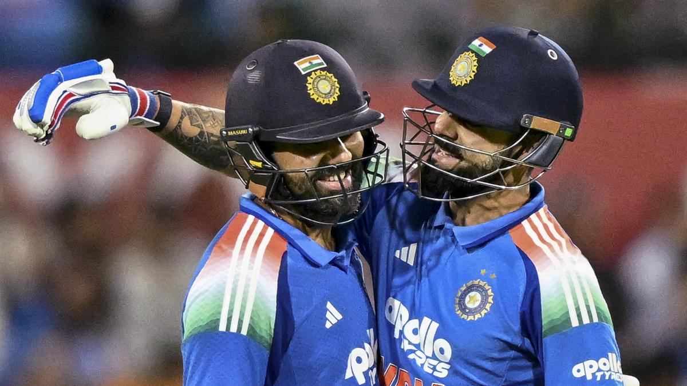

Stay updated with the latest happenings around the globe. From political developments to environmental issues, our World News section brings you comprehensive coverage of significant events shaping our world.
A gas explosion at a construction site in Toronto has sent seven people to the hospital, authorities confirmed. The incident occurred in the downtown area, causing significant damage to nearby buildings and prompting an evacuation of the surrounding neighborhood.
Emergency services responded quickly to the scene, with firefighters working to contain the situation and ensure the safety of residents. The cause of the explosion is currently under investigation, but initial reports suggest that a gas leak may have been the trigger.
Witnesses described a loud blast followed by a cloud of smoke and debris. "It was terrifying," said one resident. "I saw people running and heard sirens everywhere."
The injured individuals are being treated for various injuries, with some in critical condition. Authorities have urged residents to avoid the area as investigations continue and safety assessments are conducted.
City officials have assured the public that they are taking all necessary measures to address the situation and prevent further incidents. "Our priority is the safety and well-being of our community," said Mayor John Smith in a statement. "We are working closely with emergency responders to manage the aftermath of this unfortunate event."
Dive into the fast-paced world of technology with our Technology News section. Discover the latest advancements, product launches, and trends in the tech industry that are transforming the way we live and work.

Sixty-five countries have signed the first-ever United Nations treaty aimed at combating cybercrime, marking a significant step forward in international digital cooperation. The treaty, known as the "Global Cybersecurity Accord," seeks to establish a unified framework for addressing cyber threats, enhancing information sharing, and promoting best practices among member states.
The accord was adopted during a special session of the UN General Assembly, where representatives from various nations gathered to discuss the growing challenges posed by cybercrime. With cyberattacks becoming increasingly sophisticated and prevalent, the need for a coordinated global response has never been more urgent.
Key provisions of the treaty include the establishment of a global cybercrime task force, the development of standardized protocols for incident reporting, and the promotion of cybersecurity education and awareness programs. The treaty also emphasizes the importance of protecting critical infrastructure and ensuring the privacy and security of individuals' data.
Experts believe that the Global Cybersecurity Accord will pave the way for stronger international collaboration in the fight against cybercrime. "This treaty represents a landmark achievement in our collective efforts to address the challenges of the digital age," said Dr. Maria Lopez, a cybersecurity expert at the International Cybersecurity Institute. "By working together, nations can better protect their citizens and economies from the growing threat of cyberattacks."
The signing ceremony was hosted by Viet Nam in collaboration with the UN Office on Drugs and Crime (UNODC), drawing senior officials, diplomats and experts from across regions.
Read More...your daily dose of sports action with updates on major sporting events, athlete performances, and game analyses. Our Sports News section covers everything from football and basketball to tennis and athletics.

Rohit Sharma struck his 50th international hundred and Virat Kohli played time-bending knock in possibly their last outing in Australia, propelling India to a consolation nine-wicket victory in the third ODI here on Saturday.
Chasing a challenging 286, India rode on Rohit's 121 off 125 balls and Kohli's unbeaten 74 off 81 to overhaul the target with 69 balls to spare at the SCG Cricket Ground.
Rohit, who score his 50 international hundreds, anchored the innings with a blend of aggression and composure. His innings included 13 boundaries and three sixes, showcasing his ability to dominate the Australian bowling attack.
Kohli, on the other hand, played a crucial supporting role, ensuring that India maintained a steady pace throughout the chase. His innings was marked by patience and strategic shot selection, which frustrated the Australian bowlers.
The victory provided a morale boost for the Indian team after losing the first two matches of the series. It also highlighted the enduring class of both Rohit and Kohli, who continue to be pivotal figures in Indian cricket.
Australia's bowlers put up a valiant effort, with Mitchell Starc and Pat Cummins taking key wickets. However, they were unable to contain the Indian batsmen on a pitch that offered some assistance to the bowlers early on but gradually eased out.
The win also had implications for the ICC ODI rankings, with India climbing a few spots thanks to the comprehensive victory. As the series concluded, both teams looked ahead to future challenges, with India aiming to build on this performance in upcoming tournaments.
Stay in the loop with the latest buzz from the entertainment world. From movie releases and celebrity gossip to music trends and award shows, our Entertainment News section has it all.
Season 2 starts with a major step from Noah and Joanne as they invite their friends for dinner. As often happens at mixed gatherings, an off-hand comment shows Noah and Joanne that they are not on the same page.
Noah is hurt that Joanne would even consider not inviting his close friend Gabe (Adam Brody), who is also her colleague. Joanne, for her part, is upset that Noah would think she would exclude Gabe intentionally. The dinner ends awkwardly, and the couple must confront the underlying issues in their relationship.
As the season progresses, Noah and Joanne navigate the complexities of their relationship, including trust issues, communication challenges, and differing expectations. The show continues to explore themes of love, commitment, and personal growth, all while maintaining its signature blend of humor and heart.
Kristen Bell and Adam Brody deliver standout performances, bringing depth and authenticity to their characters. The chemistry between the two leads remains a highlight of the series, making "Nobody Wants This." a compelling watch for fans of romantic comedies.
Overall, Season 2 of "Nobody Wants This." builds on the foundation laid in the first season, offering viewers a deeper look into the lives of Noah and Joanne as they navigate the ups and downs of their relationship.
Tune into our curated selection of podcasts covering a wide range of topics, including current affairs, technology, culture, and more. Our Podcast Highlights section features engaging discussions and expert insights to keep you informed and entertained.
CrowdScience’s Caroline Steel is in the hot seat, on a journey where she will attempt to untangle the complex story behind lying.
It’s a subject scientists and psychologists have been studying for a long time. It’s also something writers, philosophers and theologists have been interpreting for thousands of years. But we’re only now really starting to get to grips with how it works as a human behaviour.
Why do we lie? How do we learn to do it? And how can we tell when someone else is being untruthful?
Caroline speaks to experts who are using the latest technology to study lying, from brain scans to AI algorithms. She hears from people who have made a career out of detecting deception, including professional interrogators and poker players. And she explores the social and psychological factors that influence our propensity to lie.
Along the way, Caroline reflects on her own experiences with lying, and considers the ethical implications of deception in our everyday lives.
Join us for a fascinating exploration of the science of lying, and discover what it reveals about human nature.
Global Daily News is dedicated to providing accurate, timely, and comprehensive news coverage from around the world. Our team of experienced journalists and editors work tirelessly to bring you the stories that matter most, ensuring you stay informed and engaged with the world around you.
connect with us on social media:For inquiries, feedback, or to join our team, please contact us at
Phone no.: 1234567890
Thank you for choosing Global Daily News as your trusted source for news and information.